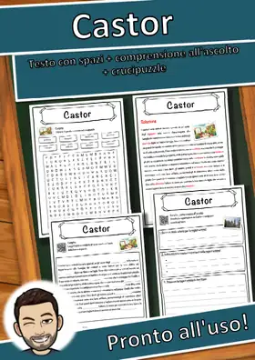
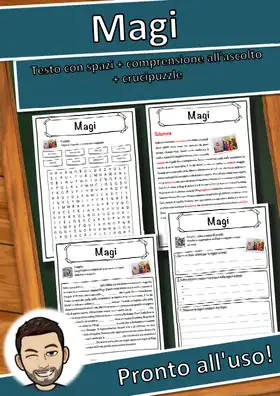
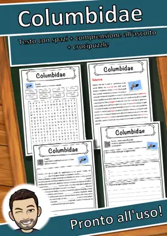
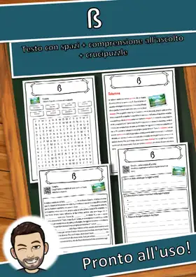
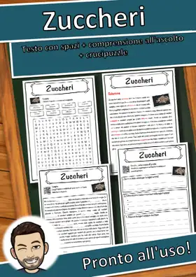
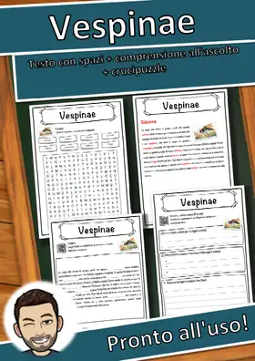
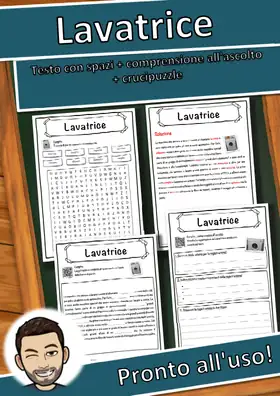
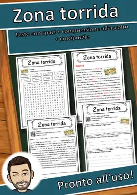

Tutti i materiali
Cerca un tema o filtra per area e classe. Ogni pagina del materiale porta direttamente al prodotto.
2.599 materiali
Tema
Classe

Farmacia – Scheda didattica classe quarta e quinta: testo con spazi vuoti e crucipuzzle

Dalmata – Scheda didattica classe quarta e quinta: testo con spazi vuoti e crucipuzzle

Creta – Scheda didattica classe quarta e quinta: testo con spazi vuoti e crucipuzzle

Corda – Scheda didattica classe quarta e quinta: testo con spazi vuoti e crucipuzzle

Cola – Scheda didattica classe quarta e quinta: testo con spazi vuoti e crucipuzzle

Città libera dell'Impero – Scheda didattica classe quarta e quinta: testo con spazi vuoti e crucipuzzle

Cieco – Scheda didattica classe quarta e quinta: testo con spazi vuoti e crucipuzzle

Campo – Scheda didattica classe quarta e quinta: testo con spazi vuoti e crucipuzzle

Calcio – Scheda didattica classe quarta e quinta: testo con spazi vuoti e crucipuzzle

Batteria – Scheda didattica classe quarta e quinta: testo con spazi vuoti e crucipuzzle

Babilonia – Scheda didattica classe quarta e quinta: testo con spazi vuoti e crucipuzzle

Azione – Scheda didattica classe quarta e quinta: testo con spazi vuoti e crucipuzzle

Acquario – Scheda didattica classe quarta e quinta: testo con spazi vuoti e crucipuzzle

Pan – Scheda didattica classe quarta e quinta: testo con spazi vuoti e crucipuzzle
Mus – Scheda didattica classe quarta e quinta: testo con spazi vuoti e crucipuzzle

Castor – Scheda didattica classe quarta e quinta: testo con spazi vuoti e crucipuzzle
Mosca – Scheda didattica classe quarta e quinta: testo con spazi vuoti e crucipuzzle
Mosa – Scheda didattica classe quarta e quinta: testo con spazi vuoti e crucipuzzle
Medusa – Scheda didattica classe quarta e quinta: testo con spazi vuoti e crucipuzzle

Magi – Scheda didattica classe quarta e quinta: testo con spazi vuoti e crucipuzzle
Ibiza – Scheda didattica classe quarta e quinta: testo con spazi vuoti e crucipuzzle

Columbidae – Scheda didattica classe quarta e quinta: testo con spazi vuoti e crucipuzzle

ß – Scheda didattica classe quarta e quinta: testo con spazi vuoti e crucipuzzle
Zeus – Scheda didattica classe quarta e quinta: testo con spazi vuoti e crucipuzzle
Yves Klein – Scheda didattica classe quarta e quinta: testo con spazi vuoti e crucipuzzle
Vento – Scheda didattica classe quarta e quinta: testo con spazi vuoti e crucipuzzle
Vendetta – Scheda didattica classe quarta e quinta: testo con spazi vuoti e crucipuzzle
Glycine max – Scheda didattica classe quarta e quinta: testo con spazi vuoti e crucipuzzle
Zebra – Scheda didattica classe quarta e quinta: testo con spazi vuoti e crucipuzzle

Zuccheri – Scheda didattica classe quarta e quinta: testo con spazi vuoti e crucipuzzle
Zea mays – Scheda didattica classe quarta e quinta: testo con spazi vuoti e crucipuzzle
Sus scrofa – Scheda didattica classe quarta e quinta: testo con spazi vuoti e crucipuzzle
Gerridae – Scheda didattica classe quarta e quinta: testo con spazi vuoti e crucipuzzle
Procyon lotor – Scheda didattica classe quarta e quinta: testo con spazi vuoti e crucipuzzle
Yeti – Scheda didattica classe quarta e quinta: testo con spazi vuoti e crucipuzzle
Theraphosidae – Scheda didattica classe quarta e quinta: testo con spazi vuoti e crucipuzzle

Vespinae – Scheda didattica classe quarta e quinta: testo con spazi vuoti e crucipuzzle
Ulmus – Scheda didattica classe quarta e quinta: testo con spazi vuoti e crucipuzzle
Trichoptera – Scheda didattica classe quarta e quinta: testo con spazi vuoti e crucipuzzle
Crittografia – Scheda didattica classe quarta e quinta: testo con spazi vuoti e crucipuzzle
Łódź – Scheda didattica classe quarta e quinta: testo con spazi vuoti e crucipuzzle

Lavatrice – Scheda didattica classe quarta e quinta: testo con spazi vuoti e crucipuzzle
Zurigo – Scheda didattica classe quarta e quinta: testo con spazi vuoti e crucipuzzle
Zug – Scheda didattica classe quarta e quinta: testo con spazi vuoti e crucipuzzle

Zona torrida – Scheda didattica classe quarta e quinta: testo con spazi vuoti e crucipuzzle
Zona temperata – Scheda didattica classe quarta e quinta: testo con spazi vuoti e crucipuzzle
Zirconio – Scheda didattica classe quarta e quinta: testo con spazi vuoti e crucipuzzle
Zinédine Zidane – Scheda didattica classe quarta e quinta: testo con spazi vuoti e crucipuzzle
Nessun materiale trovato: prova con un'altra parola o un altro filtro.